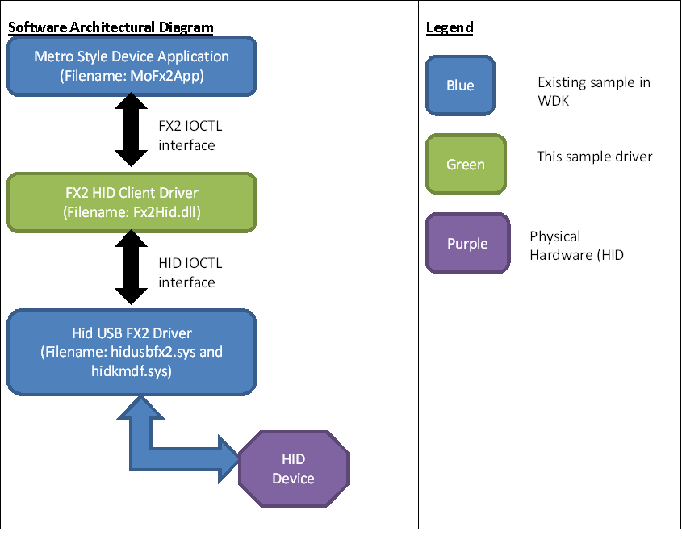

The HID Client Sample driver (Fx2HID.dll) illustrates how to expose vendor-specific functionality on a HID collection. This sample is designed to work with the OSR USB FX2 Learning Kit board and the Custom driver access Windows Store app.
The sample driver demonstrates how to load a User-Mode Driver Framework (UMDF) version 1 driver on a vendor-specific HID collection. It exposes the custom Fx2 device interface and was written to support Windows Store style apps. It includes device metadata that allows it to be called from the Custom Driver Access sample. This application demonstrates how to programmatically set the 7-segment and bar-graph LEDs on the learning kit board.
The HID Client Sample driver requires an additional sample driver, HID USB FX2, in order to run. The projects for both drivers are included as part of the HID Client Sample solution. Instructions for building and running both of these samples appear later in this file.
Theory of operation
A HID USB device provides a HID descriptor (through an interface descriptor) that identifies the device as HID-compliant and enables the system-supplied HID minidriver (hidusb.sys) and the HID class driver to load, parse the HID descriptor, and enumerate child HID device stacks. The system provides strong support for HID devices, so you do not typically have to write a HID minidriver. However, there are cases in which you might need to write your own HID minidriver (for example, if it is difficult to make desired changes to HID-compliant device firmware or if you need to make a non-HID compliant device into a HID device without updating the firmware).
Overview of the device
The device is loosely based on the development board that is supplied with the Cypress EZ-USB FX2 Development Kit (CY3681) and contains one interface and three endpoints (Interrupt IN, Bulk Out, and Bulk IN). The firmware supports vendor commands to query or set the LED bar graph display and 7-segment LED display, and to query toggle switch states.
The interrupt endpoint sends an 8-bit value that represents the state of the switches. This value is sent on startup, resume from suspend, and whenever the switch pack setting changes. The firmware does not de-bounce the switch pack. One switch change can cause multiple bytes to be sent. The bits are in the reverse order of the labels on the pack (for example, bit 0x80 is labeled 1 on the pack).
Bulk endpoints are configured for loopback.
Overview of the driver stack
Kernel-Mode Driver Framework (KMDF) does not support HID minidrivers natively because the HID architecture requires that the HID class driver (hidclass.sys) own the driver dispatch table for HID minidrivers. This requirement conflicts with the KMDF requirement that it own the driver dispatch table in order to handle Plug and Play (PnP), power, and I/O requests correctly.
You can resolve this ownership conflict by using a driver stack that consists of a minimal WDM driver as function driver and a complete KMDF driver as lower filter driver. The function driver registers with the HID class (so hidclass.sys owns its dispatch table) and forwards all of the requests to the lower filter driver. The lower filter driver (KMDF owns the dispatch table) processes all of the requests.
The minimal function driver code is located in the src\hid\hidusbfx2\hidkmdf directory (the driver binary is named hidkmdf.sys), and the lower filter driver code is located in the src\hid\hidusbfx2\sys folder (the binary is named hidusbfx2.sys ). The function driver is a minimal WDM driver and you can reuse it without any modification. Remember to rename the driver binary when you reuse it, to avoid a name conflict. You need to modify the KMDF filter driver according to your device's requirements.
The following illustration depicts the complete driver stack for these samples.
Mapping a non-HID USB device to HID
When the HIDclass driver queries the minidriver, the minidriver returns a hard-coded report descriptor that enables the HID class driver to create child devices as described by the report descriptor. The report descriptor has one top-level application collection: vendor-defined.
The HID class driver creates a driver stack for the top-level collection. The vendor-defined collection exposes a feature button to control the 7-segment display and bar graph display. The switch pack state is exposed as an input report. Any client application can open the vendor-defined collection to send feature requests and retrieve input reports.
Switch pack mapping
The switch pack on the USB device is exposed by an input report. The HID Client Driver uses the input report to get the current state of the switches so that it can work with the Custom Device Access sample (MoFx2App).
To see how these can be exposed as hot keys, refer to the hidusbfx2 sample.
Segment Display and Bar Graph
The segment display and bar graph are mapped as HID feature controls that you can manipulate by using the HidD_SetFeature function from a user-mode application. The feature controls are mapped as vendor-defined usage page 0xff00. The SEVEN_SEGMENT_REPORT_ID and BARGRAPH_REPORT_ID usages are listed in the following tables. You can also use Hidclient.exe, an application that is available in the Windows Driver Kit (WDK), to manipulate the segment display and bar graph. For more information about this mapping, see the following two tables.
Segment Display Mapping
| Usage ID | 0xD7 | 0x06 | 0xB3 | 0xA7 | 0x66 | 0xE5 | 0xF4 | 0x07 | 0xF7 | 0x67 |
|---|---|---|---|---|---|---|---|---|---|---|
| Mapping | Display 0 | Display 1 | Display 2 | Display 3 | Display 4 | Display 5 | Display 6 | Display 7 | Display 8 | Display 9 |
Bar Graph Mapping
Note that you can OR these values to light multiple LEDs.
| Usage ID | 0x01 | 0x02 | 0x04 | 0x08 | 0x10 | 0x20 | 0x40 | 0x80 | 0xFF | 0x00 |
|---|---|---|---|---|---|---|---|---|---|---|
| Mapping | LED 1 ON | LED 2ON | LED 3ON | LED 4ON | LED 5ON | LED 6ON | LED 7ON | LED 8ON | All LEDS ON | All LEDS OFF |
Support for selective suspend
The HID class driver provides support for selective suspend. The minidriver participates in this feature by handling HID class IOCTLs appropriately. To enable the selective suspend feature for your device, you need to add a "SelectiveSuspend" = 1 value in the registry in the device hardware key through the INF file. For an example, see the hidusbfx2.inf file.
Note To build this sample, you need Microsoft Visual Studio 2013 and Windows Driver Kit (WDK) 8.1. You can get evaluation copies at Visual Studio 2013 and WDK 8.1. For Windows Driver Kit (WDK) 8 samples, download the WDK 8 samples pack. The samples in the WDK 8 samples pack will build only on Microsoft Visual Studio Professional 2012 or Microsoft Visual Studio Ultimate 2012 with the WDK 8.
Related topics
Related technologies
Creating Framework-based HID Minidrivers , Creating UMDF-based HID MinidriversOperating system requirements
| Client | |
|---|---|
| Server |
Build the sample
To build the sample driver:
- Start the Visual Studio 2013 development environment with administrator privileges.
- Select the build configuration (for example, Wind8 Debug) and the architecture (for example, x64).
- From the File/Open/Project/Solution... menu, navigate to the VcxProj or sln file and load the project.
- Right-click the package project and choose Properties.
- Choose the Driver Install option under Configuration Properties.
- Choose the Deployment option and select the Enable deployment box.
- Configure your remote test machine (as described in the WDK documentation).
- Under Driver Installation Options (in the package Property Pages dialog), select the Custom Command Line radio button and enter "pnputil -a *.inf" in the corresponding text box.
- Choose the Apply button in the package Property Pages dialog.
- From the Build menu, select Build Solution.
If these steps were successful, Microsoft Visual Studio will build and deploy the sample (FX2Hid.dll) as well as hidusbfx2.sys and hidkmdf.sys to the remote test machine that you configured in step 7 (above).
Run the sample
To run and test the sample driver:
- Start the Visual Studio 2013 development environment on your test machine.
- From the File/Open/Project/Solution... menu, navigate to the VcxProj or sln file and load the HID Client Driver sample project.
- Open devicemetadatapackage\MultipleLocale\ 852E87BF-5B37-4E89-B516-3CC7C10B20ED.devicemetadata-ms using the driver metadata wizard in Visual Studio 2013. In the finish tab of the wizard, check the box to copy to your local store.
- Build and deploy the Custom driver access sample - MoFx2App.exe.
- Plug in OSR USB Fx2 device. (The hidusbfx2 driver package loads on the OSR device node, and the Fx2Hid driver loads on the HID collection.)